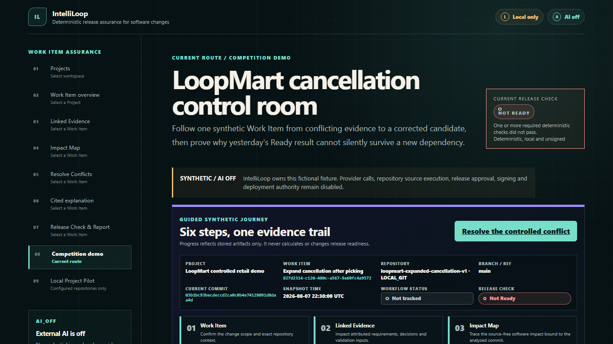
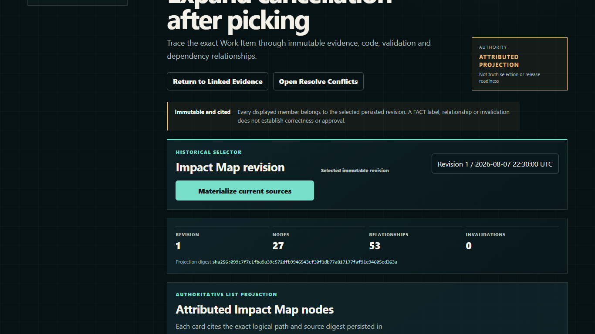
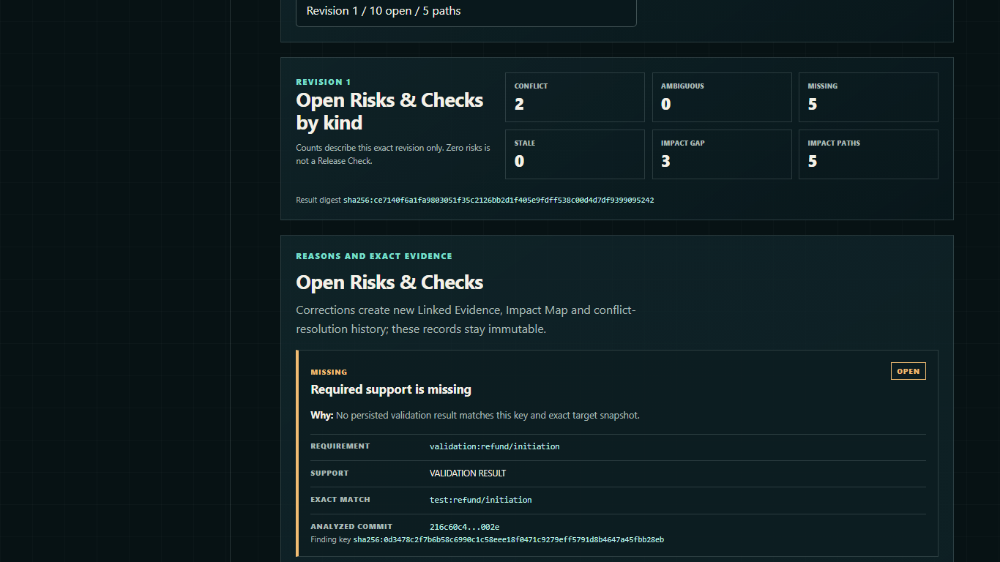
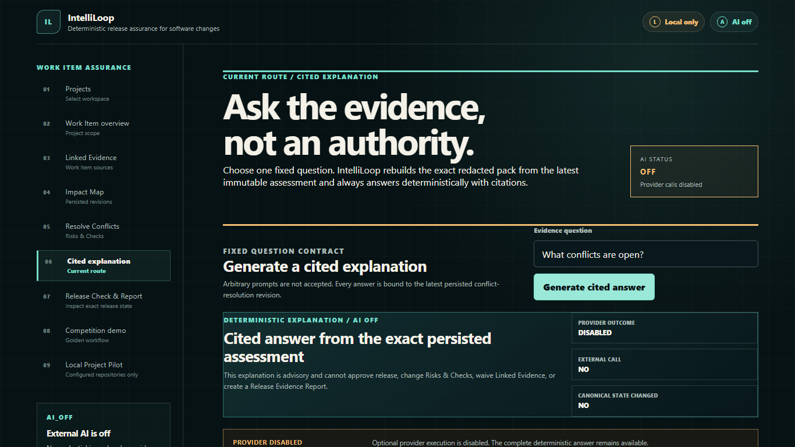
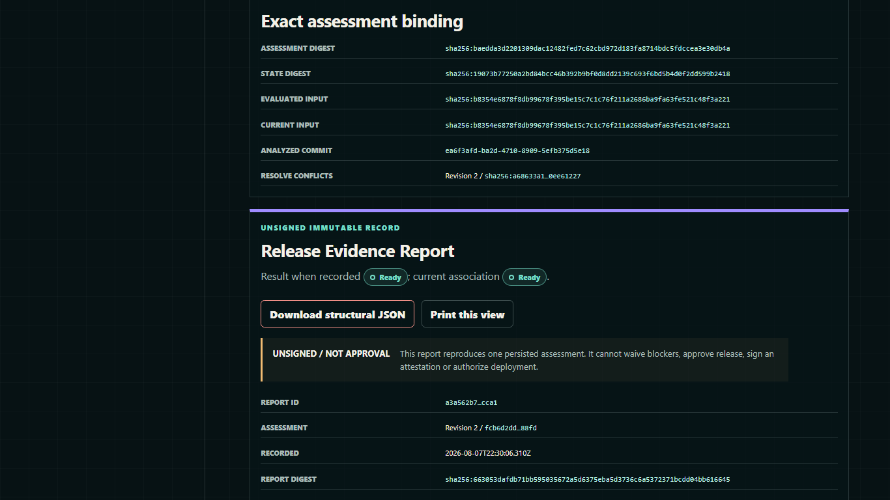
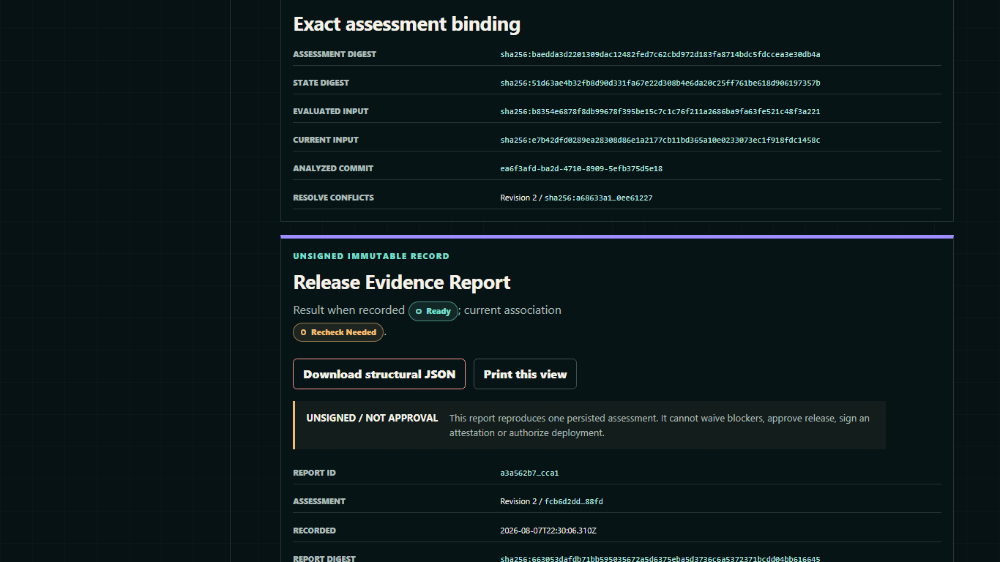
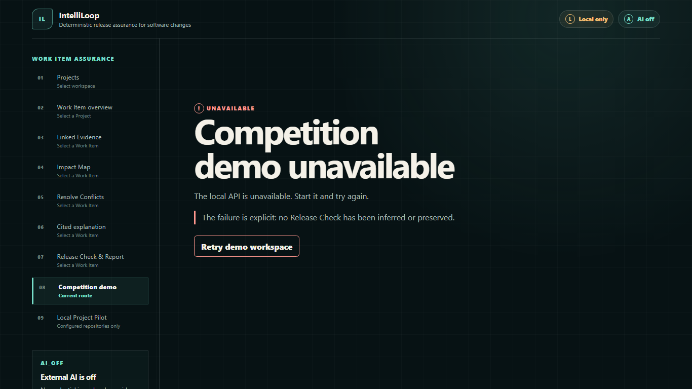

Fail closed on conflicting evidence
The persisted starting candidate is BLOCKED; IntelliLoop does not guess a winning claim.

Recorded synthetic evidence · AI off
Use this ordered sequence only if the local live demonstration cannot be recovered without changing persisted truth. It reflects the verified release-candidate flow; it is not a live run, production result, release approval, or deployment authorization.
The persisted starting candidate is BLOCKED; IntelliLoop does not guess a winning claim.

Attributed nodes and relationships are bound to persisted revisions and a source-free code-map projection.

Open findings and exact paths make the reason and affected assets inspectable.

The bounded answer is generated locally from the exact evidence pack; outbound disclosure remains NOT SENT.

All nine deterministic obligations pass for the exact persisted inputs, producing an unsigned Passport.

A dependency change makes the historical READY association STALE without rewriting its immutable projection.

If the service is unavailable, the application invents no cached or replacement readiness state. Recover with the documented retry, or remain on this recorded sequence.
